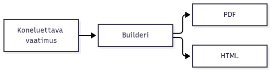

Esimerkkijulkaisu
Tämä luku on julkaisupohjan lähtöpiste. Kertova teksti kirjoitetaan tähän. Vaatimustaulut tulevat myöhemmin skeemasta ja IDS-tiedostosta, ei käsin ylläpidettynä kopiona.

Tämä luku on julkaisupohjan lähtöpiste. Kertova teksti kirjoitetaan tähän. Vaatimustaulut tulevat myöhemmin skeemasta ja IDS-tiedostosta, ei käsin ylläpidettynä kopiona.
